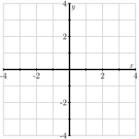

Section 2.2 Quadratic forms
¶In the last section, we saw that symmetric matrices can be orthogonally diagonalized and that the variance of a data set is described using a symmetric matrix, the covariance matrix \(C\text{.}\) In addition, we saw how an understanding of directions where the variance is large and where it is small can help us understand when the data is concentrated along, say, a line.
In this section, we'll explore how to determine the directions in which the variance is as large as possible and where it is as small as possible. In fact, this is part of a larger story, involving a type of function called a quadratic form, that we'll explore here.
Preview Activity 2.2.1.
Let's begin by looking at an example. Suppose we have three data points that form the demeaned data matrix
-
Plot the demeaned data points in Figure 2.2.1.
Figure 2.2.1. Use this coordinate grid to plot the demeaned data points.
Based on this sketch, which direction would you estimate to have the greatest variance? Which direction would you estimate to have the smallest variance?
Construct the covariance matrix \(C\text{.}\)
Find a basis of \(\real^2\) consisting of eigenvectors of \(C\text{.}\) Use this to construct an orthogonal diagonalization of \(C\text{.}\)
Suppose that \(\uvec_1\) is an eigenvector having unit length associated with the largest eigenvalue of \(C\text{.}\) Sketch the line defined by \(\uvec_1\) and determine the variance \(V_{\uvec_1}\text{.}\)
Suppose that \(\uvec_2\) is an eigenvector having unit length associated with the smallest eigenvalue of \(C\text{.}\) Sketch the line defined by \(\uvec_2\) and determine the variance \(V_{\uvec_2}\text{.}\)
Generally speaking, if \(C\) is a covariance matrix and \(\uvec\) an eigenvector of \(C\) having unit length and with associated eigenvalue \(\lambda\text{,}\) what is \(V_{\uvec}\text{?}\)
Subsection 2.2.1 Quadratic forms
When we have a matrix \(A\) of demeaned data points, the symmetric covariance matrix \(C\) determines the variance in a direction \(\uvec\) by
where \(\uvec\) is a unit vector.
More generally, a symmetric \(n\times n\) matrix \(A\) defines a function \(q:\real^n \to \real\) by
Notice that this expression is similar to the one we use to find the variance \(V_{\uvec}\) in terms of the covariance matrix \(C\text{.}\) The only difference is that we allow \(\xvec\) to be any vector rather than requiring it to be a unit vector.
Example 2.2.2.
Suppose that \(A=\begin{bmatrix} 1 \amp 2\\ 2 \amp 1 \end{bmatrix} \text{.}\) If we write \(\xvec=\twovec{x_1}{x_2}\text{,}\) then we have
We may evaluate the quadratic form using some input vectors:
Definition 2.2.3.
If \(A\) is a symmetric \(n\times n\) matrix, the quadratic form defined by \(A\) is the function \(q(\xvec) = \xvec\cdot(A\xvec)\text{.}\)
Activity 2.2.2.
We will look at some more examples of quadratic forms.
Consider the symmetric matrix \(D = \begin{bmatrix} 3 \amp 0 \\ 0 \amp -1 \\ \end{bmatrix} \text{.}\) Write the quadratic form \(q(\xvec)\) defined by \(D\) in terms of the components of \(\xvec=\twovec{x_1}{x_2}\text{.}\) What is the value of \(q\left(\twovec2{-4}\right)\text{?}\)
Given the symmetric matrix \(A=\begin{bmatrix} 2 \amp 5 \\ 5 \amp -3 \end{bmatrix} \text{,}\) write the quadratic form \(q(\xvec)\) defined by \(A\) and evaluate \(q\left(\twovec{2}{-1}\right)\text{.}\)
Suppose that \(q\left(\twovec{x_1}{x_2}\right) = 3x_1^2 - 4x_1x_2 + 4x_2^2\text{.}\) Find a symmetric matrix \(A\) such that \(q\) is the quadratic form defined by \(A\text{.}\)
Suppose that we have a demeaned data matrix \(A = \begin{bmatrix} 2 \amp 5 \amp -7 \\ -2 \amp -2 \amp 4 \end{bmatrix} \text{.}\) Write the quadratic form defined by the covariance matrix \(C\text{.}\)
Suppose that \(q\) is a quadratic form and that \(q(\xvec) = 3\text{.}\) What is \(q(2\xvec)\text{?}\) \(q(-\xvec)\text{?}\) \(q(10\xvec)\text{?}\)
Suppose that \(A\) is a symmetric matrix and \(q(\xvec)\) is the quadratic form defined by \(A\text{.}\) Suppose that \(\xvec\) is an eigenvector of \(A\) with associated eigenvalue -4 and with length 7. What is \(q(\xvec)\text{?}\)
Linear algebra is principally about things that are linear. However, quadratic forms, as the name implies, have a distinctly non-linear character. First, if \(A=\begin{bmatrix} a \amp b \\ b \amp c \end{bmatrix}\text{,}\) is a symmetric matrix, then the associated quadratic form is
Notice how the unknowns \(x_1\) and \(x_2\) are multiplied together, which tells us this isn't a linear function.
This expression takes a notable form if \(D\) is a diagonal matrix. In particular, if \(D = \begin{bmatrix} a \amp 0 \\ 0 \amp c \\ \end{bmatrix} \text{,}\) then \(q\left(\twovec{x_1}{x_2}\right) = ax_1^2 + cx_2^2\text{.}\) This is special because there is no cross-term involving \(x_1x_2\text{.}\)
Remember that matrix transformations have the property that \(T(s\xvec) = sT(s\xvec)\text{.}\) Quadratic forms behave differently:
For instance, when we multiply \(\xvec\) by the scalar 2, then \(q(2\xvec) = 4q(\xvec)\text{.}\) Also, notice that \(q(-\xvec) = q(\xvec)\) since the scalar is squared.
Finally, evaluating a quadratic form on an eigenvector has a particularly simple form. Suppose that \(\xvec\) is an eigenvector of \(A\) with associated eigenvalue \(\lambda\text{.}\) We then have
Let's now recall our motivating question: in which direction \(\uvec\) is the variance of a dataset as large as possible and in which is it as small as possible. Remembering that the vector \(\uvec\) is a unit vector, we can now state a more general form of this question: If \(q(\xvec)\) is a quadratic form, for which unit vectors \(\uvec\) is \(q(\uvec)\) as large as possible and for which is it as small as possible? Since a unit vector specifies a direction, we will often ask for the directions in which the quadratic form \(q(\xvec)\) is at its maximum or minimum value.
Activity 2.2.3.
We can gain some intuition about this problem by graphing the quadratic form paying particular attention to the unit vectors.
Evaluating the following cell defines the matrix \(D = \begin{bmatrix} 3 \amp 0 \\ 0 \amp -1 \end{bmatrix}\) and displays the graph of the associated quadratic form \(q_D(\xvec)\text{.}\) In addition, the points corresponding to vectors \(\uvec\) with unit length are displayed as a curve.
Notice that the matrix \(D\) is diagonal. In which directions does the quadratic form have its maximum and minimum values?Write the quadratic form \(q_D\) associated to \(D\text{.}\) What is the value of \(q_D\left(\twovec10\right)\text{?}\) What is the value of \(q_D\left(\twovec01\right)\text{?}\)
Consider a unit vector \(\uvec=\twovec{u_1}{u_2}\) so that \(u_1^2+u_2^2 = 1\text{,}\) an expression we can rewrite as \(u_1^2 = 1-u_2^2\text{.}\) Write the quadratic form \(q_D(\uvec)\) and replace \(u_1^2\) by \(1-u_2^2\text{.}\) Now explain why the maximum of \(q_D(\uvec)\) is 3. In which direction does this occur? Does this agree with what you observed by looking at the graph above?
Write the quadratic form \(q_D(\uvec)\) and replace \(u_2^2\) by \(1-u_1^2\text{.}\) What is the minimum value of \(q_D(\uvec)\) and in which direction does this occur?
Use the previous Sage cell to change the matrix to \(A=\begin{bmatrix} 1 \amp 2 \\ 2 \amp 1 \end{bmatrix}\) and display the graph of the quadratic form \(q_A(\xvec) = \xvec\cdot(A\xvec)\text{.}\) Determine the directions in which the maximum and minimum occur?
-
Remember that \(A=\begin{bmatrix} 1 \amp 2 \\ 2 \amp 1 \end{bmatrix}\) is symmetric so that \(A=QDQ^T\) where \(D\) is the diagonal matrix above and \(Q\) is the orthogonal matrix that rotates vectors by \(45^\circ\text{.}\) Write \(\vvec = Q^T\uvec\text{.}\) Explain why \(\vvec\) is also a unit vector; that is, explain why
\begin{equation*} \len{\vvec}^2 = \len{Q^T\uvec}^2 = (Q^T\uvec)\cdot(Q^T\uvec) = 1. \end{equation*} We now have \(q_A(\uvec) = q_D(\vvec)\text{.}\) Explain how we now know the maximum value of \(q_A(\uvec)\) is 3 and determine the direction in which this occurs. Also, determine the minumum value of \(q_A(\uvec)\) and determine the direction in which this occurs.
There's a lot in this activity so let's take some time to unpack it. First off, diagonal matrices are relatively easy to work with. For instance, the diagonal matrix \(D=\begin{bmatrix} 3 \amp 0 \\ 0 \amp -1 \end{bmatrix}\) defines the associated quadratic form \(q_D(\xvec) = 3x_1^2 - x_2^2\text{,}\) which has no cross term. For this reason, we may determine where the maxima and minima of \(q(\uvec)\) occur when \(\uvec=\twovec{u_1}{u_2}\) is a unit vector. In that case, we have \(u_1^2 + u_2^2 = 1\) so that we can rewrite
Seen in terms of \(u_2\text{,}\) \(q_D(\uvec)\) is a quadratic function that has a maximum of 3 when \(u_2=0\text{.}\) Therefore, the maximum value of \(q_D(\uvec)\) is 3, which occurs in the direction \(\uvec=\pm\twovec10\text{.}\)
Similarly, we can rewrite
This shows us that \(q_D(\uvec)\) has a minimum value of -1, which occurs when \(u_1=0\) or when \(\uvec=\pm\twovec01\text{.}\)
When \(D\) is a diagonal matrix, we can now answer the question: what are the maximum and minimum values of \(q_D(\uvec)\) and in which directions do they occur. We can use this to understand the case of a more general symmetric matrix.
For example, if \(A\) is a symmetric matrix, we know that \(A\) is orthogonally diagonalizable and this forms a relationship between \(q_A\) and \(q_D\) for some diagonal matrix \(D\text{.}\) Using the example in the activity, we have \(A = \begin{bmatrix} 1 \amp 2 \\ 2 \amp 1 \end{bmatrix} = QDQ^T\) where \(Q=\begin{bmatrix}\uvec_1 \amp \uvec_2 \end{bmatrix}\) and \(D=\begin{bmatrix} 3 \amp 0 \\ 0 \amp -1 \end{bmatrix}\text{.}\) Recall that \(\uvec_1\) and \(\uvec_2\) are eigenvectors of \(A\) having associated eigenvalues 3 and -1, respectively.
Since \(Q\) is orthogonal, it preserves the lengths of vectors; that is,
Therefore, if \(\uvec\) is a unit vector, then so is \(Q\uvec\text{.}\)
If \(\uvec\) is a unit vector, then
If we define \(\vvec=Q^T\uvec\text{,}\) or equivalently, \(\uvec=Q\vvec\text{,}\) then \(\vvec\) is also a unit vector, and we have \(q_A(\uvec) = q_D(\vvec)\text{.}\) In other words, \(q_A\) and \(q_D\) are the same function after a change of coordinates.
We know that \(q_D(\vvec)\) has a maximum value of 3 when \(\vvec=\pm\twovec10\text{.}\) This says that \(q_A(\uvec)\) has a maximum value of 3 when \(\uvec=Q\vvec=\pm Q\twovec10=\pm\uvec_1\text{.}\) Similarly, \(q_A(\uvec)\) has a minimum value of -1 when \(\uvec=Q\vvec=\pm Q\twovec01 =\pm\uvec_2\text{.}\)
The essential thing to note is the role of the eigenvectors: the maximum value of \(q_A(\uvec)\) is the largest eigenvalue of \(A\) and that maximum occurs in the direction of \(\uvec_1\text{,}\) the eigenvector associated to the largest eigenvalue. In the same way, the minimum value of \(q_A(\uvec)\) is the smallest eigenvalue and that minimum occurs in the direction of \(\uvec_2\text{,}\) the eigenvector associated to the smallest eigenvalue.
More generally, we have
Proposition 2.2.4.
Suppose that \(A\) is a symmetric matrix, that we list its eigenvalues in decreasing order \(\lambda_1 \geq \lambda_2 \ldots \geq \lambda_n\) and that \(\uvec_1,\uvec_2,\ldots,\uvec_n\) is a basis of associated eigenvectors. If \(\uvec\) is a unit vector, then the maximum value of \(q_A(\uvec)\) is \(\lambda_1\text{,}\) which occurs in the directions \(\pm\uvec_1\text{.}\) Similarly, the minimum value of \(q_A(\uvec)\) is \(\lambda_n\text{,}\) which occurs in the directions \(\pm\uvec_n\text{.}\)
Example 2.2.5.
Consider the matrix \(A=\begin{bmatrix} 2 \amp 2 \\ 2 \amp -1 \end{bmatrix}\text{,}\) which may be orthogonally diagonalized as \(A=QDQ^T\) where
We see that the maximum value of \(q_A(\uvec)\) is 3, which occurs in the direction \(\pm\twovec{2/\sqrt{5}}{1/\sqrt{5}}\text{,}\) and the minimum value is -2, which occurs in the direction \(\pm\twovec{-1/\sqrt{5}}{2/\sqrt{5}}\text{.}\)
Example 2.2.6.
Suppose we have the matrix of demeaned data points \(A = \begin{bmatrix} 3 \amp 0 \amp -3 \\ 0 \amp 3 \amp -3 \\ \end{bmatrix}\) that we considered in Preview Activity 2.2.1. The data points are shown in Figure 2.2.7.
The set of demeaned data points from Preview Activity 2.2.1.
Consructing the covariance matrix \(C=\frac13~AA^T\) gives \(C=\begin{bmatrix}6\amp3 \\ 3\amp6\end{bmatrix}\text{,}\) which has eigenvalues \(\lambda_1 = 9\text{,}\) with associated eigenvector \(\twovec11\text{,}\) and \(\lambda_2=3\text{,}\) with associated eigenvector \(\twovec{-1}1\text{.}\)
Remember that the variance in a direction \(\uvec\) is \(V_{\uvec} = \uvec\cdot(C\uvec) = q_C(\uvec)\text{.}\) Therefore, the variance attains a maximum value of 9 in the direction \(\twovec11\) and a minimum value of 3 in the direction \(\twovec{-1}1\text{.}\) Figure 2.2.8 shows the data projected onto the lines defined by these vectors.
The demeaned data from Preview Activity 2.2.1 is shown projected onto the lines of maximal and minimal variance.
Remember that variance is additive, as stated in Proposition 2.1.15, which tells us that the total variance is \(V = 9 + 3 = 12\text{.}\)
We've been focused on finding the directions in which a quadratic form attains its maximum and minimum values, but there's another important observation to make after this activity. Recall how we used the fact that a symmetric matrix is orthogonally diagonalizable: if \(A=QDQ^T\text{,}\) then \(q_A(\uvec) = q_D(\vvec)\) where \(\vvec = Q^T\uvec\text{.}\)
More generally, if we define \(\yvec = Q^T\xvec\text{,}\) we have
Remembering that the quadratic form associated to a diagonal form has no cross terms, we obtain
In other words, after a change of coordinates, the quadratic form \(q_A\) can be written without cross terms. This is known as the Principle Axes Theorem.
Theorem 2.2.9. Principle Axes Theorem.
If \(A\) is a symmetric \(n\times n\) matrix with eigenvalues \(\lambda_1,\lambda_2,\ldots,\lambda_n\text{,}\) then the quadratic form \(q_A\) can be written, after an orthogonal change of coordinates \(\yvec=Q\xvec\text{,}\) as
We will put this to use in the next section.
Subsection 2.2.2 Definite symmetric matrices
While our study of variance provides motivation for exploring quadratic forms, these functions appear in a variety of other contexts so it's worth spending some more time with them. In particular, quadratic forms appear in multivariable calculus when describing the behavior of a function of several variables near a critical point and in physics when describing the kinetic energy of a rigid body.
The following definition will be important in this section.
Definition 2.2.10.
A symmetric matrix \(A\) is called positive definite if its associated quadratic form satisfies \(q_A(\xvec) \gt 0\) for any nonzero vector \(\xvec\text{.}\) If \(q_A(\xvec) \geq 0\) for nonzero vectors \(\xvec\text{,}\) we say that \(A\) is positive semidefinite.
Likewise, we say that \(A\) is negative definite if \(q_A(\xvec) \lt 0\) for any nonzero vector \(\xvec\text{.}\)
Finally, \(A\) is called indefinite if \(q_A(\xvec) \gt 0\) for some \(\xvec\) and \(q_A(\xvec) \lt 0\) for others.
Activity 2.2.4.
This activity explores the relationship between the eigenvalues of a symmetric matrix and its definiteness.
Consider the diagonal matrix \(D=\begin{bmatrix} 4 \amp 0 \\ 0 \amp 2 \\ \end{bmatrix}\) and write its quadratic form \(q_D(\xvec)\) in terms of the components of \(\xvec=\twovec{x_1}{x_2}\text{.}\) How does this help you decide whether \(D\) is positive definite or not?
Now consider \(D=\begin{bmatrix} 4 \amp 0 \\ 0 \amp 0 \\ \end{bmatrix}\) and write its quadratic form \(q_D(\xvec)\) in terms of \(x_1\) and \(x_2\text{.}\) What can you say about the definiteness of \(D\text{?}\)
-
If \(D\) is a diagonal matrix, what condition on the diagonal entries guarantee that \(D\) is
positive definite?
positive semidefinite?
negative definite?
negative semidefinite?
indefinite?
Suppose that \(A\) is a symmetric matrix with eigenvalues 4 and 2 so that \(A=QDQ^T\) where \(D=\begin{bmatrix}4 \amp 0 \\ 0 \amp 2 \end{bmatrix}\text{.}\) If \(\yvec = Q^T\xvec\text{,}\) then we have \(q_A(\xvec) = q_D(\yvec)\text{.}\) Explain why this tells us that \(A\) is positive definite.
Suppose that \(A\) is a symmetric matrix with eigenvalues 4 and 0. What can you say about the definiteness of \(A\) in this case?
-
What condition on the eigenvalues of a symmetric matrix \(A\) guarantee that \(A\) is
positive definite?
positive semidefinite?
negative definite?
negative semidefinite?
indefinite?
As seen in this activity, it is straightforward to determine the definiteness of a diagonal matrix. For instance, if \(D=\begin{bmatrix} 7 \amp 0 \\ 0 \amp 5 \end{bmatrix}\text{,}\) then
This shows that \(q_D(\xvec) \gt 0\) when either \(x_1\) or \(x_2\) is not zero so we conclude that \(D\) is positive definite.
In the same way, we see that \(D\) is positive semidefinite is all the diagonal entries are nonnegative.
Understanding this behavior for diagonal matrices enables us to understand more general symmetric matrices. As we saw previously, the quadratic form for a symmetric matrix \(A=QDQ^T\) agrees with the quadratic form for the diagonal matrix \(D\) after a change of coordinates. In particular,
where \(\yvec=Q^T\xvec\text{.}\) Now the diagonal entries of \(D\) are the eigenvalues of \(A\) from which we conclude that \(q_A(\xvec) \gt 0\) if all the eigenvalues of \(A\) are positive. Likewise, \(q_A(\xvec)\geq 0\) if all the eigenvalues are nonnegative.
Proposition 2.2.11.
A symmetric matrix is positive definite if all its eigenvalues are positive. It is positive semidefinite if all its eigenvalues are nonnegative.
Likewise, a symmetric matrix is indefinite if some eigenvalues are positive and some are negative.
This observation is useful when studying the nature of critical points in multivariable calculus. The rest of this section assumes that the reader is familiar with ideas from multivariable calculus and can be skipped by others.
First, suppose that \(f(x,y)\) is a differentiable function. We will use \(f_x\) and \(f_y\) to denote the partial derivatives of \(f\) with respect to \(x\) and \(y\text{.}\) Similarly, \(f_{xx}\text{,}\) \(f_{xy}\text{,}\) \(f_{yx}\) and \(f_{yy}\) denote the second partial derivatives. You may recall that the mixed partials, \(f_{xy}\) and \(f_{yx}\) are equal, under a mild assumption on the function \(f\text{.}\) A typical question in calculus is to determine where this function has its maximum and minimum values
Any local maximum or minimum of \(f\) appears at a critical point \((x_0,y_0)\) where
Near a critical point, the linear approximation of \(f\) tells us that
Activity 2.2.5.
Let's explore how our understanding of quadratic forms helps us understand how \(f\) behaves near a critical point.
Consider the function \(f(x,y) = 2x^3 - 6xy + 3y^2\text{.}\) Find the partial derivatives \(f_{x}\) and \(f_y\text{.}\) Then use these expressions to determine that the critical points of \(f\) are \((0,0)\) and \((1,1)\text{.}\)
Evaluate the second partial derivatives \(f_{xx}\text{,}\) \(f_{xy}\text{,}\) and \(f_{yy}\text{.}\)
Let's first consider the critical point \((1,1)\text{.}\) Use the linear approximation as written above to find an expression approximating \(f\) near the critical point.
-
Using the vector \(\wvec = \twovec{x-1}{y-1}\text{,}\) rewrite your approximation as
\begin{equation*} f(x,y) \approx f(1,1) + q_A(\wvec) \end{equation*}for some matrix \(A\text{.}\) What is the matrix \(A\) in this case?
Find the eigenvalues of \(A\text{.}\) What can you conclude about the definiteness of \(A\text{?}\)
Recall that \((x_0,y_0)\) is a local minimum for \(f\) if \(f(x,y) \gt f(x_0,y_0)\) for nearby points \((x,y)\text{.}\) Explain why our understanding of the eigenvalues of \(A\) shows that \((1,1)\) is a local minimum for \(f\text{.}\)
Show that the function \(g(x,y,z) = 4xyz = x^4 -y^4-z^4\) has a critical point at \((1,1,1)\text{.}\)
-
Use the linear approximation to write
\begin{equation*} g(x,y,z) \approx g(1,1,1) + q_A(\wvec) \end{equation*}for some matrix \(A\) when \(\wvec = \threevec{x-1}{y-1}{z-1}\text{.}\)
Determine the matrix \(A\) and its eigenvalues. What does this say about whether \(g\) has a local maximum or minimum at \((1,1,1)\text{?}\)
Near a critical point \((x_0,y_0)\) of a function \(f(x,y)\text{,}\) we can write
where \(\wvec = \twovec{x-x_0}{y-y_0}\) and \(A = \frac12 \begin{bmatrix} f_{xx}(x_0,y_0) \amp f_{xy}(x_0,y_0) \\ f_{yx}(x_0,y_0) \amp f_{yy}(x_0,y_0) \end{bmatrix}\text{.}\) If \(A\) is positive definite, then \(q_A(\wvec) \gt 0\text{,}\) which tells us that
and that the critical point \((x_0,y_0)\) is therefore a local minimum.
The matrix
is called the Hessian of \(f\text{,}\) and we see now that the eigenvalues of this symmetric matrix determine the nature of the critical point \((x_0,y_0)\text{.}\) In particular, if the eigenvalues are both positive, then \(q_H\) is positive definite, and the critical point is a local minimum.
This observation leads to the Second Derivative Test for multivariable functions.
Proposition 2.2.12. Second Derivative Test.
The nature of a critical point of a multivariable function is determined by the Hessian \(H\) of the function at the critical point. If
\(H\) has all positive eigenvalues, the critical point is a local minimum.
\(H\) has all negative eigenvalues, the critical point is a local maximum.
\(H\) has both positive and negative eigenvalues, the critical point is neither a local maximum or minimum.
Most multivariable calculus texts assume that the reader is not familiar with eigenvalues and so write the second derivative test for functions of two variables in terms of \(D=\det(H)\text{.}\) If
\(D \gt 0\) and \(f_{xx}(x_0,y_0)) \gt 0\text{,}\) then \((x_0, y_0)\) is a local minimum.
\(D \gt 0\) and \(f_{xx}(x_0,y_0)) \lt 0\text{,}\) then \((x_0, y_0)\) is a local maximum.
\(D \lt 0\text{,}\) then \((x_0,y_0)\) is neither a local maximum or minimum.
The conditions in this version of the second derivative test imply the corresponding conditions on the eigenvalues of \(H\text{.}\)
Subsection 2.2.3 Summary
This section explored quadratic forms, functions that are defined by symmetric matrices.
-
If \(A\) is a symmetric matrix, when the quadratic form defined by \(A\) is the function \(q_A(\xvec) = \xvec\cdot(A\xvec)\text{.}\)
Quadratic forms appear when studying the variance of a data set. If \(C\) is the covariance matrix, then the variance in the direction defined by a unit vector \(\uvec\) is \(q_C(\uvec) = \uvec\cdot(C\uvec)\text{.}\)
Similarly, quadratic forms appear in multivariable calculus when analyzing the behavior of a function of several variables near a critical point.
-
If \(\lambda_1\) is the largest eigenvalue of a symmetric matrix \(A\) and \(\lambda_n\) the smallest, then the maximum value of \(q_A(\uvec)\text{,}\) when \(\uvec\) is a unit vector, is \(\lambda_1\text{,}\) and this maximum value occurs in the direction of \(\uvec_1\text{,}\) a unit eigenvector associated to \(\lambda_1\text{.}\)
Similarly, the minimum value of \(q_A(\uvec)\) is \(\lambda_n\text{,}\) which appears in the direction of \(\uvec_n\text{,}\) an eigenvector associated to \(\lambda_n\text{.}\)
A symmetric matrix is positive definite if its eigenvalues are all positive, positive semidefinite if its eigenvalues are all nonnegative, and indefinite if it has both positive and negative eigenvalues.